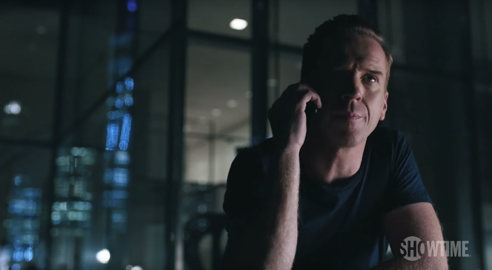

01
阿克斯公寓 · 深夜
不能下单，仍然能看见

剧情事实阿克斯深夜告诉温迪，自己签字放弃交易是错误。温迪指出使签字成为必要的是他此前无视规则，并劝他练习放手。他随后看见莫桑比克地震警报，立即联系过去扶持的外部基金，提出由可信的人执行想法，且不能让人发现自己在背后。[1][2]
这一场为什么重要 · 个人解读
温迪区分的是行为造成的后果与限制本身，阿克斯却只感到能力被浪费。于是他把不能交易重新拆成仍能观察、仍能联系、仍有旧部，尝试把被禁止的行动转移到别人手里。可见性被切断，并不等于控制消失；他想保留的正是法律安排要求交出的那部分。
因此 → 签字后的第一晚，他已经在寻找继续参与市场的通道。